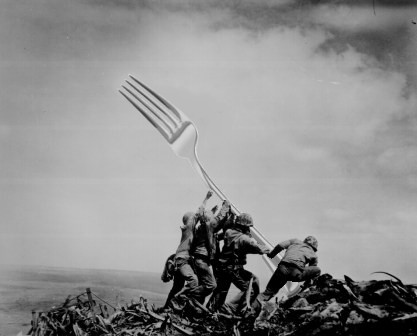

Weekly musing #18 - After the fork
|  |
{kind=link}
A hard fork and a hard deadline
August 1 2017 was F-Day.
Bitcoin's first block size upgrade hard fork - a controversial event which some had said could not happen.
Yet, here we are, nearly a week after this significant event which has given birth to a spin-off chain with a bigger (and flexible) block size cap.
Congratulations to all!
Some lessons emerging
Though coordination for a hard fork among 4 different client implementations (ABC, BU, Classic and XT) is not entirely easy, it does seem like this fork could not have been a success otherwise. The valuable contributions from every client is what made it a success in the end.
Late-game specification changes led to some consternation, and should better be avoided in future.
A surprisingly large amount of code and tests need cleanup and fixing after a hard fork.
And not everything will go smoothly - bugs will be there (in various implementations) no matter what. As someone predicted, having multiple client implementations is a good way to save each other's bacon during such events.
References
[1] Image of raising fork at Iwo Jima is by Imgur user "totherioters" http://imgur.com/gallery/FGEzb